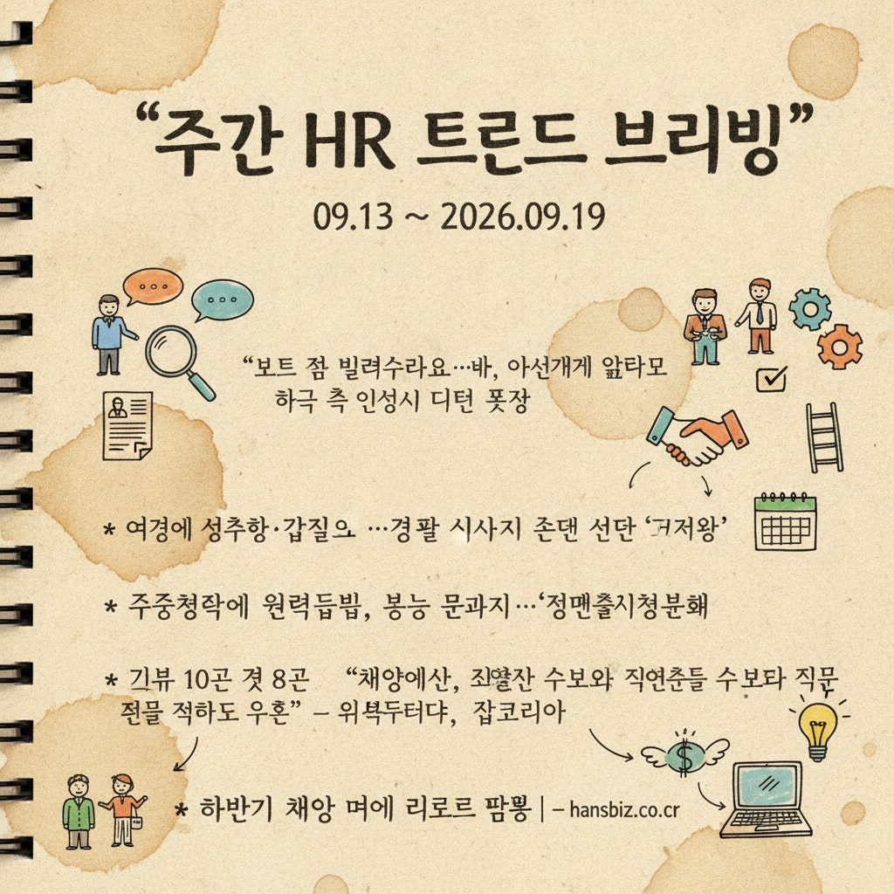
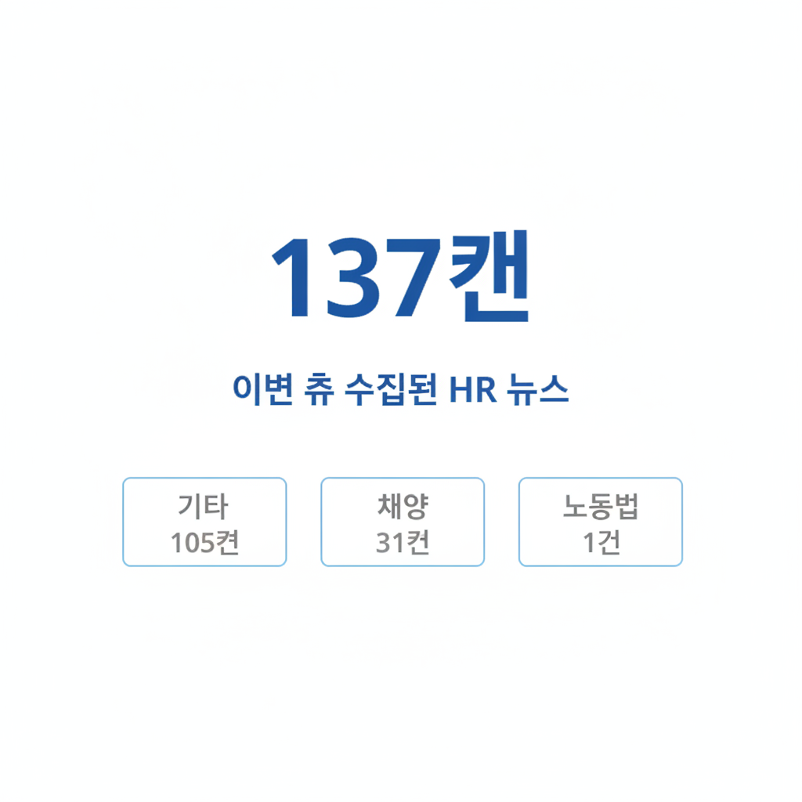

09.13 ~ 2026.09.19


총평: 이번 주 HR 시장은 CJ·신세계 등 주요 대기업을 중심으로 하반기 신입 공채가 활발히 시작된 가운데, 단순 스펙보다 'AI 역량'과 '직무 적합성'을 최우선으로 검증하는 채용 트렌드가 뚜렷해졌습니다. 한편 반도체·의료·지역 현장 등 산업 전반의 고질적인 인력난을 극복하기 위해 로봇·AI 도입 및 외국인 근로자 활용 등 대체 인력 수급 전략이 구체화되었습니다. 이와 함께 정년 연장 논의와 통상임금 및 생활임금 이슈가 지속되며 인사 노무 관리의 선제적 대응이 강조되고 있습니다.
시사점1: 직무 적합도 중심 채용과 AI 역량 평가 도입의 필요성 - 주요 대기업들이 채용 프로세스에 AI 역량 진단을 적극 도입하고 지원자의 직무 적합도를 최우선시함에 따라, 인사담당자는 단순 스펙 평가에서 벗어나 업무 현장에 즉시 적용 가능한 AI 활용 능력과 직무 전문성을 검증할 수 있는 평가 체계를 구축해야 합니다.
시사점2: 만성적 인력난 대응을 위한 기술 도입 및 인력 다변화 전략 - 의료, 반도체, 유통, 농촌 등 여러 영역에서 인력 부족 현상이 심화되고 있으므로, AI 및 로봇을 활용한 업무 자동화와 더불어 외국인 인력, 정년 인력 등 다변화된 인적 자원을 적극 수용하는 인력 운용 모델을 준비해야 합니다.
시사점3: 정년 연장 이슈와 임금 체계 재정비에 대한 선제적 대비 - 지자체 공무직의 정년 연장 사례와 함께 노동계의 정년 연장 및 통상임금·생활임금 관련 요구가 지속되고 있는 만큼, 인사담당자는 향후 고령화에 대비한 조직 내 중장년 인력 활용 방안과 지속 가능한 임금 산정 기준을 미리 정비할 필요가 있습니다.